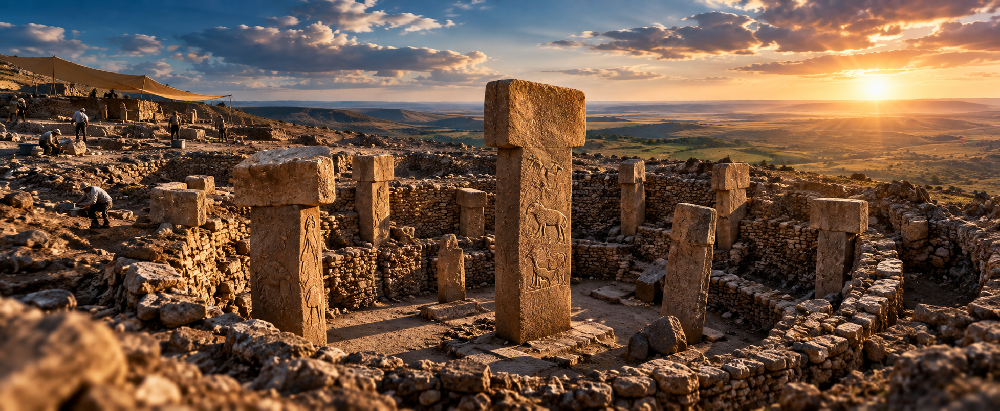

For generations, historians taught a neat and simple rule about human culture: first, humans learned how to farm and plant crops; then, with food security guaranteed, they built towns, established social hierarchies, and finally constructed temples and monuments. But in the mid-1990s, archaeologist Klaus Schmidt began excavating a mysterious hill in southern Turkey called Göbekli Tepe, completely destroying that timeline.
A Monument Built Before Agriculture
Radiocarbon dating and archaeological stratigraphy proved that Göbekli Tepe was built roughly 11,500 years ago—long before the invention of writing, metal tools, or the wheel. Even more astonishingly, it was built by hunter-gatherers, not settled farmers. They carved massive T-shaped limestone pillars weighing up to 16 tons, decorated them with intricate reliefs of animals, and erected them in massive circular rings.

The Power of Shared Belief
Why would nomadic hunter-gatherers spend decades organizing thousands of people to quarry, carve, and transport multi-ton stones without modern equipment?
The Simple Example: The Mega-Concert Before the Town
Think of it like this: normally, we assume a city must be built first so people can gather resources to put on a massive music festival. Göbekli Tepe shows the exact opposite happened. It implies that people first came together from miles around purely driven by a shared spiritual belief, culture, or religion. Organizing this massive labor force required so much food and coordination that it actually forced humans to invent agriculture and settle down just to feed the temple workers.
In short, culture and religion came first, and civilization followed as a side effect.
A Deliberate Burial
Another profound mystery uncovered by the German Archaeological Institute is that around 8,000 BCE, the ancient builders did not just abandon Göbekli Tepe—they meticulously buried it. Tons of backfill dirt, stones, and animal bones were intentionally piled over the monumental pillars, preserving them in pristine condition beneath the desert dirt until modern science brought them back to light.
Scientific References & Sources
- German Archaeological Institute (DAI): Göbekli Tepe Research Project Official Overview.
- Smithsonian Magazine: Göbekli Tepe: The World's First Temple.
- Schmidt, Klaus (2009). Göbekli Tepe: A Stone Age Sanctuary in South-Eastern Anatolia. Deutsches Archäologisches Institut.